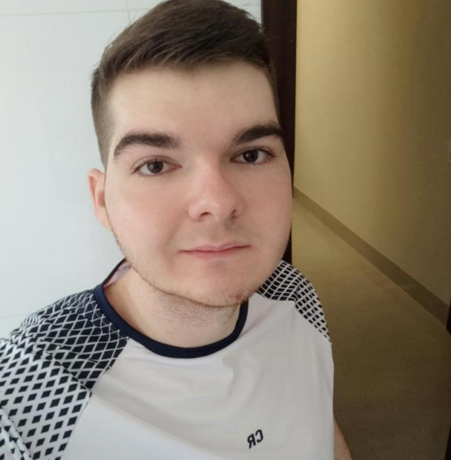

Gabriel Fernando Brand
gabriel.brand@unemat.br
(66) 99633-2900
23 anos | Brasileiro
EXPERIÊNCIA PROFISSIONAL
MB Contabilidade - Sinop/MT
Auxiliar de escritório em geral - Emprego atual desde 07/2019
Manutenção de rede/sistemas/computadores, auxílio ao setor de RH, cadastramento de empresas ao sistema, atendimento, arquivação de documentos.
EXPERIÊNCIAS ACADÊMICAS
Médio Completo - concluído em 12/2017
Escola Nilza de Oliveria Pipino - Sinop/MT
Sistemas de Informação - cursando
Universidade do Estado de Mato Grosso - UNEMAT
CURSOS
Introdução à Cibersegurança - Cisco - concluído em 2023
Fundamentos em Cibersegurança - Cisco - concluído em 2023
Curso de Extensão - Introdução a Redes (CCNAv7: Introduction to Networks) - UNEMAT - concluído em 2023
Segurança de Endpoint - Cisco - concluído em 2024
SOFT E HARD SKILLS
HARD-SKILLS
Conhecimento em Pacote Office, Computadores, Redes e Internet
Conhecimento em Teorias e Ferramentas de Segurança
Conhecimento em Design
Inglês - Avançado
SOFT-SKILLS
Resolução de problemas
Prestativo
Organizado
Criativo